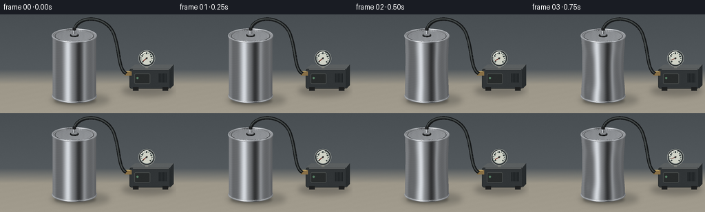
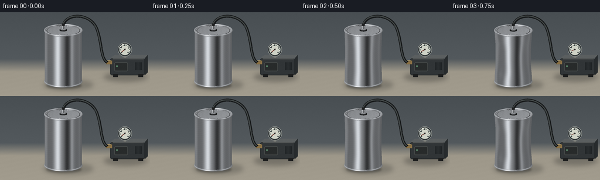
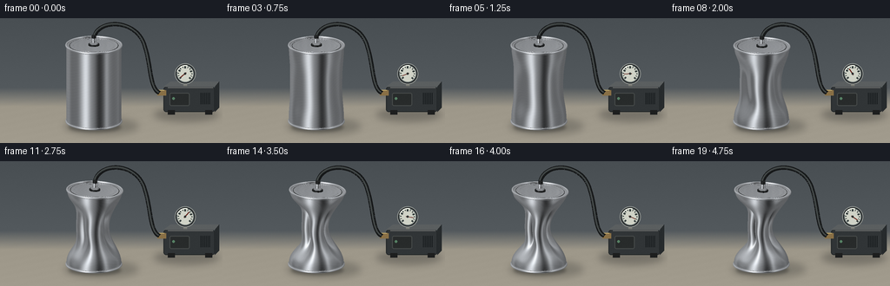
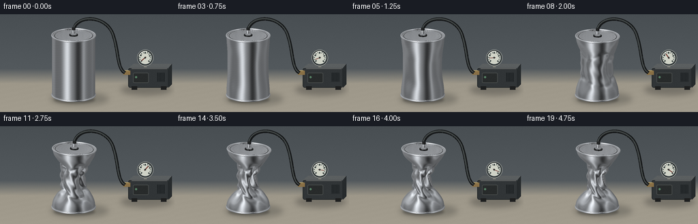

CODING AGENTS AS PIXEL WORLD MODELS
traex/GPT-6.1-Sol · phygen_019
点击播放 · 原生 RGB 像素
逐轮保存的候选
回放视频、检查图与代码变化。
每份候选均可单独播放。实际图片检查记录在下方工具轨迹中。
候选 01播放与检查图
点击播放 · 原生 RGB 像素


展开代码变化
--- 上一保存版本
+++ 本次保存版本
@@ -0,0 +1,230 @@
+from pathlib import Path
+import json, math
+import numpy as np
+from PIL import Image, ImageDraw, ImageFilter, ImageFont
+import artifact_io
+
+ROOT=Path(__file__).resolve().parent
+SPEC=json.loads((ROOT/'task_spec.json').read_text())
+S=3; W=SPEC['width']*S; H=SPEC['height']*S
+SCALE=34*S; CX=108*S; CY=122*S
+E=0.31; CO=math.cos(E); SI=math.sin(E)
+V=np.array([0.,-CO,SI])
+rng=np.random.default_rng(619)
+
+def project(p):
+ p=np.asarray(p)
+ return np.stack([CX+SCALE*p[...,0],CY-SCALE*(SI*p[...,1]+CO*p[...,2]), -CO*p[...,1]+SI*p[...,2]],axis=-1)
+
+# Fixed photographic workbench, with a softly out-of-focus back wall.
+yy,xx=np.mgrid[:H,:W]; x=xx/S; y=yy/S
+blend=np.clip((y-80)/22,0,1)
+wall=np.stack([73+.13*y,79+.13*y,83+.13*y],axis=-1)
+bench=np.stack([157+.10*(y-92),151+.10*(y-92),137+.10*(y-92)],axis=-1)
+bg=wall*(1-blend[...,None])+bench*blend[...,None]
+bg+=rng.normal(0,.5,(H,W,1))
+bg+=(np.sin(x*.16+y*.8)*.5*blend)[...,None]
+bg=np.uint8(np.clip(bg,0,255))
+
+def backplate(p):
+ im=Image.fromarray(bg.copy()); d=ImageDraw.Draw(im)
+ # Small vacuum pump, set behind the specimen and connected to its sealed lid.
+ sh=Image.new('RGBA',(W,H)); sd=ImageDraw.Draw(sh)
+ sd.ellipse((177*S,103*S,252*S,119*S),fill=(24,25,26,75)); sh=sh.filter(ImageFilter.GaussianBlur(4*S)); im=Image.alpha_composite(im.convert('RGBA'),sh).convert('RGB'); d=ImageDraw.Draw(im)
+ d.rounded_rectangle((188*S,79*S,247*S,108*S),radius=3*S,fill=(49,53,55),outline=(35,39,40),width=S)
+ d.polygon([(188*S,79*S),(196*S,73*S),(252*S,73*S),(247*S,79*S)],fill=(91,95,96))
+ d.polygon([(247*S,79*S),(252*S,73*S),(252*S,103*S),(247*S,108*S)],fill=(39,43,45))
+ d.line((193*S,80*S,245*S,80*S),fill=(110,112,111),width=S)
+ for a in range(6):
+ d.line(((231+a*2)*S,86*S,(231+a*2)*S,99*S),fill=(25,29,31),width=S)
+ d.rounded_rectangle((195*S,86*S,218*S,101*S),radius=2*S,fill=(40,43,43),outline=(71,75,74),width=S)
+ d.ellipse((198*S,91*S,201*S,94*S),fill=(87,130,101))
+ d.rectangle((193*S,106*S,201*S,111*S),fill=(30,31,31));d.rectangle((236*S,106*S,244*S,111*S),fill=(30,31,31))
+ # Brass connection and mechanical pressure dial.
+ d.rectangle((181*S,83*S,191*S,89*S),fill=(137,112,70))
+ d.line((183*S,83*S,189*S,83*S),fill=(191,167,107),width=S)
+ d.rectangle((211*S,70*S,215*S,78*S),fill=(122,122,116))
+ gx,gy=213*S,64*S; rad=12*S
+ d.ellipse((gx-rad,gy-rad,gx+rad,gy+rad),fill=(29,32,33),outline=(141,146,143),width=S)
+ d.ellipse((gx-10*S,gy-10*S,gx+10*S,gy+10*S),fill=(208,211,199),outline=(94,103,104),width=S)
+ for k in range(13):
+ a=math.radians(140+k*22)
+ r0=(7.1 if k%3 else 6.3)*S;r1=8.5*S
+ d.line((gx+r0*math.cos(a),gy+r0*math.sin(a),gx+r1*math.cos(a),gy+r1*math.sin(a)),fill=(48,57,57),width=S if k%3 else 2*S)
+ a=math.radians(140+255*p)
+ d.line((gx-1.7*S*math.cos(a),gy-1.7*S*math.sin(a),gx+6.7*S*math.cos(a),gy+6.7*S*math.sin(a)),fill=(100,35,27),width=S)
+ d.ellipse((gx-1.3*S,gy-1.3*S,gx+1.3*S,gy+1.3*S),fill=(47,50,49))
+ d.arc((gx-10*S,gy-10*S,gx+10*S,gy+10*S),195,285,fill=(244,248,237),width=S)
+ # Hose is drawn from its brass inlet to the can's sealed vacuum fitting.
+ pts=[]
+ for t in np.linspace(0,1,180):
+ # Cubic curve; the end at the can remains fixed to its top as it settles.
+ a=np.array([108+1.2*p,23+3.5*p]);b=np.array([112,0]);c=np.array([159,0]);e=np.array([167,34]);
+ q=(1-t)**3*a+3*(1-t)**2*t*b+3*(1-t)*t*t*c+t**3*e
+ pts.append(tuple(q*S))
+ for t in np.linspace(0,1,110):
+ a=np.array([167,34]); b=np.array([174,55]); c=np.array([172,80]); e=np.array([183,86]);q=(1-t)**3*a+3*(1-t)**2*t*b+3*(1-t)*t*t*c+t**3*e;pts.append(tuple(q*S))
+ d.line(pts,fill=(22,24,25),width=5*S,joint='curve')
+ d.line([(a-.55*S,b-.55*S) for a,b in pts],fill=(59,64,64),width=2*S,joint='curve')
+ d.line([(a-.7*S,b-.8*S) for a,b in pts],fill=(90,95,93),width=max(1,int(.6*S)),joint='curve')
+ # Broad contact shadow, fixed to the rigid can base.
+ shadow=Image.new('RGBA',(W,H));sd=ImageDraw.Draw(shadow)
+ sd.ellipse((74*S,115*S,159*S,134*S),fill=(31,33,32,65));shadow=shadow.filter(ImageFilter.GaussianBlur(4*S))
+ im=Image.alpha_composite(im.convert('RGBA'),shadow)
+ shadow=Image.new('RGBA',(W,H));sd=ImageDraw.Draw(shadow)
+ sd.ellipse((79*S,120*S,139*S,131*S),fill=(22,24,24,95));shadow=shadow.filter(ImageFilter.GaussianBlur(1.8*S))
+ return np.array(Image.alpha_composite(im,shadow).convert('RGB')).astype(float)
+
+def normals_grid(pos):
+ du=np.roll(pos,-1,axis=1)-np.roll(pos,1,axis=1)
+ dz=np.gradient(pos,axis=0)
+ n=np.cross(du,dz); n/=np.maximum(np.linalg.norm(n,axis=-1,keepdims=True),1e-8)
+ return n
+
+def metal_color(p,n,kind='metal'):
+ dot=np.sum(n*V,axis=-1)
+ ref=2*dot[...,None]*n-V
+ rx,ry,rz=ref[...,0],ref[...,1],ref[...,2]
+ # Reflections of tall studio softboxes and a dark flag, not painted stripes.
+ soft=125+45*np.clip(rz+.2,0,1)
+ soft+=100*np.exp(-((rx+.52)/.27)**2)*np.exp(-((ry+.73)/.55)**2)
+ soft+=51*np.exp(-((rx-.78)/.11)**2)*np.exp(-((ry+.48)/.9)**2)
+ soft-=75*np.exp(-((rx-.38)/.27)**2)*np.exp(-((ry+.8)/.75)**2)
+ soft-=30*np.exp(-((rx+.94)/.12)**2)
+ light=np.array([-.6,-.6,.65]);light/=np.linalg.norm(light)
+ lam=np.maximum(0,np.sum(n*light,axis=-1))
+ soft=soft*(.78+.22*lam)+13*lam
+ # Microscopic rolling grain and low-contrast scuffs in the aluminum.
+ grain=1.4*np.sin(p[...,2]*1170+p[...,0]*27)+.65*np.sin(p[...,2]*3430)
+ soft+=grain
+ tint=np.stack([soft*.98,soft,soft*1.025],axis=-1)
+ if kind=='dark': tint=tint*.19+np.array([9,10,10])
+ if kind=='rim': tint=tint*1.08+5
+ return np.clip(tint,15,250)
+
+class Raster:
+ def __init__(self,img):
+ self.im=img;self.dep=np.full((H,W),-1e8);self.mask=np.zeros((H,W),bool)
+ def mesh(self,pos,tri,norm=None,kind='metal',colors=None):
+ pos=np.asarray(pos).reshape(-1,3)
+ if norm is None: raise ValueError('normal required')
+ norm=np.asarray(norm).reshape(-1,3)
+ col=metal_color(pos,norm,kind) if colors is None else np.asarray(colors).reshape(-1,3)
+ proj=project(pos)
+ for ids in np.asarray(tri):
+ pts=proj[ids]; ns=norm[ids]
+ if np.dot(ns.mean(axis=0),V)<-.10: continue
+ x0=max(0,int(np.floor(pts[:,0].min())));x1=min(W-1,int(np.ceil(pts[:,0].max())))
+ y0=max(0,int(np.floor(pts[:,1].min())));y1=min(H-1,int(np.ceil(pts[:,1].max())))
+ if x1<x0 or y1<y0: continue
+ a,b,c=pts; det=(b[1]-c[1])*(a[0]-c[0])+(c[0]-b[0])*(a[1]-c[1])
+ if abs(det)<1e-7:continue
+ px,py=np.meshgrid(np.arange(x0,x1+1)+.5,np.arange(y0,y1+1)+.5)
+ w0=((b[1]-c[1])*(px-c[0])+(c[0]-b[0])*(py-c[1]))/det
+ w1=((c[1]-a[1])*(px-c[0])+(a[0]-c[0])*(py-c[1]))/det; w2=1-w0-w1
+ depth=w0*a[2]+w1*b[2]+w2*c[2]
+ buf=self.dep[y0:y1+1,x0:x1+1]; ok=(w0>=-1e-5)&(w1>=-1e-5)&(w2>=-1e-5)&(depth>buf)
+ if not ok.any():continue
+ rgb=w0[...,None]*col[ids[0]]+w1[...,None]*col[ids[1]]+w2[...,None]*col[ids[2]]
+ self.im[y0:y1+1,x0:x1+1][ok]=rgb[ok];buf[ok]=depth[ok];self.mask[y0:y1+1,x0:x1+1][ok]=True
+
+def grid_tri(nz,nt):
+ ar=[]
+ for z in range(nz-1):
+ for t in range(nt):
+ a=z*nt+t;b=z*nt+(t+1)%nt;c=(z+1)*nt+t;dd=(z+1)*nt+(t+1)%nt
+ ar.extend([(a,b,c),(b,dd,c)])
+ return np.array(ar)
+
+NT=144; NZ=76;theta=np.arange(NT)*2*np.pi/NT
+TRI=grid_tri(NZ,NT)
+
+def top_transform(pos,p):
+ a=.045*p
+ out=pos.copy();out[...,0]+= .045*p + a*(pos[...,2]-2.8)
+ out[...,2]-=.105*p + a*pos[...,0]
+ return out
+
+def ring(ras,r,z,minor,p=0,top=False,kind='rim'):
+ a=np.arange(120)*2*np.pi/120;b=np.arange(12)*2*np.pi/12
+ aa,bb=np.meshgrid(a,b)
+ pos=np.stack([(r+minor*np.cos(bb))*np.cos(aa),(r+minor*np.cos(bb))*np.sin(aa),z+minor*np.sin(bb)],axis=-1)
+ normal=np.stack([np.cos(bb)*np.cos(aa),np.cos(bb)*np.sin(aa),np.sin(bb)],axis=-1)
+ if top:pos=top_transform(pos,p)
+ tri=[]
+ for j in range(12):
+ for i in range(120):
+ a=j*120+i;b=j*120+(i+1)%120;c=((j+1)%12)*120+i;d=((j+1)%12)*120+(i+1)%120;tri.extend([(a,b,c),(b,d,c)])
+ ras.mesh(pos,tri,normal,kind)
+
+def disc(ras,r,z,p,top=True):
+ rr=np.linspace(0,r,20); aa,rad=np.meshgrid(theta,rr)
+ pos=np.stack([rad*np.cos(aa),rad*np.sin(aa),np.full_like(rad,z)],axis=-1)
+ if top:pos=top_transform(pos,p)
+ normals=np.zeros_like(pos);normals[...,2]=1
+ color=metal_color(pos,normals)
+ variation=(7*pos[...,0]-4*pos[...,1]+2*np.sin(rad*215))[...,None]
+ color=np.clip(color+variation,0,255)
+ ras.mesh(pos,grid_tri(20,NT),normals,colors=color)
+
+def cylinder(ras,r,z0,z1,p,kind='metal',n=80):
+ aa,zz=np.meshgrid(np.arange(n)*2*np.pi/n,np.linspace(z0,z1,4))
+ pos=np.stack([r*np.cos(aa),r*np.sin(aa),zz],axis=-1)
+ normal=np.stack([np.cos(aa),np.sin(aa),np.zeros_like(aa)],axis=-1)
+ pos=top_transform(pos,p)
+ ras.mesh(pos,grid_tri(4,n),normal,kind)
+ rr=np.linspace(0,r,4);aa,rad=np.meshgrid(np.arange(n)*2*np.pi/n,rr)
+ pos=np.stack([rad*np.cos(aa),rad*np.sin(aa),np.full_like(rad,z1)],axis=-1);pos=top_transform(pos,p)
+ normal=np.zeros_like(pos);normal[...,2]=1
+ ras.mesh(pos,grid_tri(4,n),normal,kind)
+
+def smoothstep(a,b,t):
+ v=np.clip((t-a)/(b-a),0,1);return v*v*(3-2*v)
+
+def progress(i):
+ t=i/19
+ return .14*smoothstep(.03,.28,t)+.36*smoothstep(.25,.53,t)+.40*smoothstep(.48,.70,t)+.10*smoothstep(.70,.95,t)
+
+def make_frame(i):
+ p=progress(i);ras=Raster(backplate(p))
+ tt=np.linspace(0,1,NZ);a,t=np.meshgrid(theta,tt)
+ # Rigid circular ends; atmospheric pressure buckles only the thin wall.
+ weight=np.exp(-((t-.52)/.355)**4)*np.sin(np.pi*t)**.46
+ # Lobes move inward unequally, producing diagonal, progressively sharper creases.
+ phase=3*a+1.3*t+.5
+ folds=(.5+.5*np.cos(phase))**(1.7+2*p)
+ dent=.20+.48*folds
+ rad=.935*(1-p*weight*dent)
+ xx=rad*np.cos(a)*(1-.43*p*weight)
+ yy=rad*np.sin(a)*(1-.10*p*weight)
+ xx+=.06*p*weight*np.sin(9*t)
+ zz=.105+2.69*t-.105*p*t +.065*p*weight*np.sin(3*a+6*t)
+ xx+=.045*p*t
+ pos=np.stack([xx,yy,zz],axis=-1)
+ n=normals_grid(pos)
+ ras.mesh(pos,TRI,n)
+ # Rolled double seams and recessed intact sealed lid.
+ ring(ras,.928,.105,.035)
+ ring(ras,.929,.155,.011,kind='metal')
+ ring(ras,.935,2.807,.035,p,True)
+ ring(ras,.918,2.755,.014,p,True,kind='metal')
+ disc(ras,.905,2.793,p)
+ ring(ras,.824,2.797,.008,p,True,kind='dark')
+ ring(ras,.807,2.799,.008,p,True)
+ ring(ras,.705,2.796,.004,p,True,kind='metal')
+ # Airtight black rubber gasket, hexagonal compression nut and hose barb.
+ cylinder(ras,.185,2.805,2.85,p,'dark')
+ cylinder(ras,.145,2.84,2.915,p,'metal',n=6)
+ cylinder(ras,.091,2.91,3.065,p,'rim')
+ ring(ras,.096,3.01,.01,p,True)
+ cylinder(ras,.079,3.055,3.15,p,'dark')
+ # Tiny sensor grain is fixed in screen space, so it doesn't crawl in timelapse.
+ grain=np.random.default_rng(913).normal(0,.58,(H,W,1))
+ rgb=np.uint8(np.clip(ras.im+grain,0,255))
+ return np.array(Image.fromarray(rgb).resize((SPEC['width'],SPEC['height']),Image.Resampling.LANCZOS))
+
+if __name__=='__main__':
+ frames=[]
+ for i in range(SPEC['frames']):
+ frames.append(make_frame(i));print(f'Frame {i+1}/{SPEC["frames"]}',flush=True)
+ artifact_io.save(np.stack(frames).astype(np.uint8),ROOT)
候选 02播放与检查图
点击播放 · 原生 RGB 像素


展开代码变化
--- 上一保存版本
+++ 本次保存版本
@@ -191,14 +191,21 @@
# Rigid circular ends; atmospheric pressure buckles only the thin wall.
weight=np.exp(-((t-.52)/.355)**4)*np.sin(np.pi*t)**.46
# Lobes move inward unequally, producing diagonal, progressively sharper creases.
- phase=3*a+1.3*t+.5
- folds=(.5+.5*np.cos(phase))**(1.7+2*p)
+ phase=3*a+1.3*t+.5+p*(.65*np.tanh((t-.34)/.055)-1.0*np.tanh((t-.67)/.045))
+ folds=(.5+.5*np.cos(phase))**(1.7+4*p)
dent=.20+.48*folds
rad=.935*(1-p*weight*dent)
+ # Local panel buckling generates crossing shoulders and sharp, asymmetric folds.
+ late=smoothstep(.14,.83,p)
+ crease1=np.exp(-((t-.28-.045*np.sin(2*a+.8))/.035)**2)
+ crease2=np.exp(-((t-.73-.052*np.sin(3*a-1))/.032)**2)
+ crease3=np.exp(-((t-.51-.09*np.cos(a+1))/.05)**2)
+ rad-=late*(.18*crease1*(.65+.35*np.cos(2*a))+.21*crease2*(.6+.4*np.sin(a+.3))+.12*crease3*(.5+.5*np.sin(2*a+2)))
+ rad+=late*.032*weight*np.sin(7*a+9*t)*np.sin(22*t+2*a)
xx=rad*np.cos(a)*(1-.43*p*weight)
yy=rad*np.sin(a)*(1-.10*p*weight)
- xx+=.06*p*weight*np.sin(9*t)
- zz=.105+2.69*t-.105*p*t +.065*p*weight*np.sin(3*a+6*t)
+ xx+=.06*p*weight*np.sin(9*t)+late*.032*weight*np.tanh((t-.57)/.035)
+ zz=.105+2.69*t-.105*p*t +.065*p*weight*np.sin(3*a+6*t)+late*.035*weight*np.sin(7*a+13*t)
xx+=.045*p*t
pos=np.stack([xx,yy,zz],axis=-1)
n=normals_grid(pos)
可观测工具轨迹
实际执行的命令与返回图片。
命令 1exit 0
/bin/bash -lc 'ls -la && cat prompt.txt && cat GENERATION_RULES.md && cat task_spec.json'
命令 2exit 0
/bin/bash -lc "cat artifact_io.py && python - <<'PY' import importlib.util for x in ['numpy','PIL','scipy','numba']: print(x, bool(importlib.util.find_spec(x))) PY"
命令 3exit 1
/bin/bash -lc "cat > generate.py <<'PY'
from pathlib import Path
import json, math
import numpy as np
from PIL import Image, ImageDraw, ImageFilter, ImageFont
import artifact_io
ROOT=Path(__file__).resolve().parent
SPEC=json.loads((ROOT/'task_spec.json').read_text())
S=3; W=SPEC['width']*S; H=SPEC['height']*S
SCALE=34*S; CX=108*S; CY=122*S
E=0.31; CO=math.cos(E); SI=math.sin(E)
V=np.array([0.,-CO,SI])
rng=np.random.default_rng(619)
def project(p):
p=np.asarray(p)
return np.stack([CX+SCALE*p[...,0],CY-SCALE*(SI*p[...,1]+CO*p[...,2]), -CO*p[...,1]+SI*p[...,2]],axis=-1)
# Fixed photographic workbench, with a softly out-of-focus back wall.
yy,xx=np.mgrid[:H,:W]; x=xx/S; y=yy/S
blend=np.clip((y-80)/22,0,1)
wall=np.stack([73+.13*y,79+.13*y,83+.13*y],axis=-1)
bench=np.stack([157+.10*(y-92),151+.10*(y-92),137+.10*(y-92)],axis=-1)
bg=wall*(1-blend[...,None])+bench*blend[...,None]
bg+=rng.normal(0,.5,(H,W,1))
bg+=(np.sin(x*.16+y*.8)*.5*blend)[...,None]
bg=np.uint8(np.clip(bg,0,255))
def backplate(p):
im=Image.fromarray(bg.copy()); d=ImageDraw.Draw(im)
# Small vacuum pump, set behind the specimen and connected to its sealed lid.
sh=Image.new('RGBA',(W,H)); sd=ImageDraw.Draw(sh)
sd.ellipse((177*S,103*S,252*S,119*S),fill=(24,25,26,75)); sh=sh.filter(ImageFilter.GaussianBlur(4*S)); im=Image.alpha_composite(im.convert('RGBA'),sh).convert('RGB'); d=ImageDraw.Draw(im)
d.rounded_rectangle((188*S,79*S,247*S,108*S),radius=3*S,fill=(49,53,55),outline=(35,39,40),width=S)
d.polygon([(188*S,79*S),(196*S,73*S),(252*S,73*S),(247*S,79*S)],fill=(91,95,96))
d.polygon([(247*S,79*S),(252*S,73*S),(252*S,103*S),(247*S,108*S)],fill=(39,43,45))
d.line((193*S,80*S,245*S,80*S),fill=(110,112,111),width=S)
for a in range(6):
d.line(((231+a*2)*S,86*S,(231+a*2)*S,99*S),fill=(25,29,31),width=S)
d.rounded_rectangle((195*S,86*S,218*S,101*S),radius=2*S,fill=(40,43,43),outline=(71,75,74),width=S)
d.ellipse((198*S,91*S,201*S,94*S),fill=(87,130,101))
d.rectangle((193*S,106*S,201*S,111*S),fill=(30,31,31));d.rectangle((236*S,106*S,244*S,111*S),fill=(30,31,31))
# Brass connection and mechanical pressure dial.
d.rectangle((181*S,83*S,191*S,89*S),fill=(137,112,70))
d.line((183*S,83*S,189*S,83*S),fill=(191,167,107),width=S)
d.rectangle((211*S,70*S,215*S,78*S),fill=(122,122,116))
gx,gy=213*S,64*S; rad=12*S
d.ellipse((gx-rad,gy-rad,gx+rad,gy+rad),fill=(29,32,33),outline=(141,146,143),width=S)
d.ellipse((gx-10*S,gy-10*S,gx+10*S,gy+10*S),fill=(208,211,199),outline=(94,103,104),width=S)
for k in range(13):
a=math.radians(140+k*22)
r0=(7.1 if k%3 else 6.3)*S;r1=8.5*S
d.line((gx+r0*math.cos(a),gy+r0*math.sin(a),gx+r1*math.cos(a),gy+r1*math.sin(a)),fill=(48,57,57),width=S if k%3 else 2*S)
a=math.radians(140+255*p)
d.line((gx-1.7*S*math.cos(a),gy-1.7*S*math.sin(a),gx+6.7*S*math.cos(a),gy+6.7*S*math.sin(a)),fill=(100,35,27),width=S)
d.ellipse((gx-1.3*S,gy-1.3*S,gx+1.3*S,gy+1.3*S),fill=(47,50,49))
d.arc((gx-10*S,gy-10*S,gx+10*S,gy+10*S),195,285,fill=(244,248,237),width=S)
# Hose is drawn from its brass inlet to the can's sealed vacuum fitting.
pts=[]
for t in np.linspace(0,1,180):
# Cubic curve; the end at the can remains fixed to its top as it settles.
a=np.array([108+1.2*p,23+3.5*p]);b=np.array([112,0]);c=np.array([159,0]);e=np.array([167,34]);
q=(1-t)**3*a+3*(1-t)**2*t*b+3*(1-t)*t*t*c+t**3*e
pts.append(tuple(q*S))
for t in np.linspace(0,1,110):
a=np.array([167,34]); b=np.array([174,55]); c=np.array([172,80]); e=np.array([183,86]);q=(1-t)**3*a+3*(1-t)**2*t*b+3*(1-t)*t*t*c+t**3*e;pts.append(tuple(q*S))
d.line(pts,fill=(22,24,25),width=5*S,joint='curve')
d.line([(a-.55*S,b-.55*S) for a,b in pts],fill=(59,64,64),width=2*S,joint='curve')
d.line([(a-.7*S,b-.8*S) for a,b in pts],fill=(90,95,93),width=max(1,int(.6*S)),joint='curve')
# Broad contact shadow, fixed to the rigid can base.
shadow=Image.new('RGBA',(W,H));sd=ImageDraw.Draw(shadow)
sd.ellipse((74*S,115*S,159*S,134*S),fill=(31,33,32,65));shadow=shadow.filter(ImageFilter.GaussianBlur(4*S))
im=Image.alpha_composite(im.convert('RGBA'),shadow)
shadow=Image.new('RGBA',(W,H));sd=ImageDraw.Draw(shadow)
sd.ellipse((79*S,120*S,139*S,131*S),fill=(22,24,24,95));shadow=shadow.filter(ImageFilter.GaussianBlur(1.8*S))
return np.array(Image.alpha_composite(im,shadow).convert('RGB')).astype(float)
def normals_grid(pos):
du=np.roll(pos,-1,axis=1)-np.roll(pos,1,axis=1)
dz=np.gradient(pos,axis=0)
n=np.cross(du,dz); n/=np.maximum(np.linalg.norm(n,axis=-1,keepdims=True),1e-8)
return n
def metal_color(p,n,kind='metal'):
dot=np.sum(n*V,axis=-1)
ref=2*dot[...,None]*n-V
rx,ry,rz=ref[...,0],ref[...,1],ref[...,2]
# Reflections of tall studio softboxes and a dark flag, not painted stripes.
soft=125+45*np.clip(rz+.2,0,1)
soft+=100*np.exp(-((rx+.52)/.27)**2)*np.exp(-((ry+.73)/.55)**2)
soft+=51*np.exp(-((rx-.78)/.11)**2)*np.exp(-((ry+.48)/.9)**2)
soft-=75*np.exp(-((rx-.38)/.27)**2)*np.exp(-((ry+.8)/.75)**2)
soft-=30*np.exp(-((rx+.94)/.12)**2)
light=np.array([-.6,-.6,.65]);light/=np.linalg.norm(light)
lam=np.maximum(0,np.sum(n*light,axis=-1))
soft=soft*(.78+.22*lam)+13*lam
# Microscopic rolling grain and low-contrast scuffs in the aluminum.
grain=1.4*np.sin(p[...,2]*1170+p[...,0]*27)+.65*np.sin(p[...,2]*3430)
soft+=grain
tint=np.stack([soft*.98,soft,soft*1.025],axis=-1)
if kind=='dark': tint=tint*.19+np.array([9,10,10])
if kind=='rim': tint=tint*1.08+5
return np.clip(tint,15,250)
class Raster:
def __init__(self,img):
self.im=img;self.dep=np.full((H,W),-1e8);self.mask=np.zeros((H,W),bool)
def mesh(self,pos,tri,norm=None,kind='metal',colors=None):
pos=np.asarray(pos).reshape(-1,3)
if norm is None: raise ValueError('normal required')
norm=np.asarray(norm).reshape(-1,3)
col=metal_color(pos,norm,kind) if colors is None else np.asarray(colors).reshape(-1,3)
proj=project(pos)
for ids in tri:
pts=proj[ids]; ns=norm[ids]
if np.dot(ns.mean(axis=0),V)<-.10: continue
x0=max(0,int(np.floor(pts[:,0].min())));x1=min(W-1,int(np.ceil(pts[:,0].max())))
y0=max(0,int(np.floor(pts[:,1].min())));y1=min(H-1,int(np.ceil(pts[:,1].max())))
if x1<x0 or y1<y0: continue
a,b,c=pts; det=(b[1]-c[1])*(a[0]-c[0])+(c[0]-b[0])*(a[1]-c[1])
if abs(det)<1e-7:continue
px,py=np.meshgrid(np.arange(x0,x1+1)+.5,np.arange(y0,y1+1)+.5)
w0=((b[1]-c[1])*(px-c[0])+(c[0]-b[0])*(py-c[1]))/det
w1=((c[1]-a[1])*(px-c[0])+(a[0]-c[0])*(py-c[1]))/det; w2=1-w0-w1
depth=w0*a[2]+w1*b[2]+w2*c[2]
buf=self.dep[y0:y1+1,x0:x1+1]; ok=(w0>=-1e-5)&(w1>=-1e-5)&(w2>=-1e-5)&(depth>buf)
if not ok.any():continue
rgb=w0[...,None]*col[ids[0]]+w1[...,None]*col[ids[1]]+w2[...,None]*col[ids[2]]
self.im[y0:y1+1,x0:x1+1][ok]=rgb[ok];buf[ok]=depth[ok];self.mask[y0:y1+1,x0:x1+1][ok]=True
def grid_tri(nz,nt):
ar=[]
for z in range(nz-1):
for t in range(nt):
a=z*nt+t;b=z*nt+(t+1)%nt;c=(z+1)*nt+t;dd=(z+1)*nt+(t+1)%nt
ar.extend([(a,b,c),(b,dd,c)])
return np.array(ar)
NT=144; NZ=76;theta=np.arange(NT)*2*np.pi/NT
TRI=grid_tri(NZ,NT)
def top_transform(pos,p):
a=.045*p
out=pos.copy();out[...,0]+= .045*p + a*(pos[...,2]-2.8)
out[...,2]-=.105*p + a*pos[...,0]
return out
def ring(ras,r,z,minor,p=0,top=False,kind='rim'):
a=np.arange(120)*2*np.pi/120;b=np.arange(12)*2*np.pi/12
aa,bb=np.meshgrid(a,b)
pos=np.stack([(r+minor*np.cos(bb))*np.cos(aa),(r+minor*np.cos(bb))*np.sin(aa),z+minor*np.sin(bb)],axis=-1)
normal=np.stack([np.cos(bb)*np.cos(aa),np.cos(bb)*np.sin(aa),np.sin(bb)],axis=-1)
if top:pos=top_transform(pos,p)
tri=[]
for j in range(12):
for i in range(120):
a=j*120+i;b=j*120+(i+1)%120;c=((j+1)%12)*120+i;d=((j+1)%12)*120+(i+1)%120;tri.extend([(a,b,c),(b,d,c)])
ras.mesh(pos,tri,normal,kind)
def disc(ras,r,z,p,top=True):
rr=np.linspace(0,r,20); aa,rad=np.meshgrid(theta,rr)
pos=np.stack([rad*np.cos(aa),rad*np.sin(aa),np.full_like(rad,z)],axis=-1)
if top:pos=top_transform(pos,p)
normals=np.zeros_like(pos);normals[...,2]=1
color=metal_color(pos,normals)
variation=(7*pos[...,0]-4*pos[...,1]+2*np.sin(rad*215))[...,None]
color=np.clip(color+variation,0,255)
ras.mesh(pos,grid_tri(20,NT),normals,colors=color)
def cylinder(ras,r,z0,z1,p,kind='metal',n=80):
aa,zz=np.meshgrid(np.arange(n)*2*np.pi/n,np.linspace(z0,z1,4))
pos=np.stack([r*np.cos(aa),r*np.sin(aa),zz],axis=-1)
normal=np.stack([np.cos(aa),np.sin(aa),np.zeros_like(aa)],axis=-1)
pos=top_transform(pos,p)
ras.mesh(pos,grid_tri(4,n),normal,kind)
rr=np.linspace(0,r,4);aa,rad=np.meshgrid(np.arange(n)*2*np.pi/n,rr)
pos=np.stack([rad*np.cos(aa),rad*np.sin(aa),np.full_like(rad,z1)],axis=-1);pos=top_transform(pos,p)
normal=np.zeros_like(pos);normal[...,2]=1
ras.mesh(pos,grid_tri(4,n),normal,kind)
def smoothstep(a,b,t):
v=np.clip((t-a)/(b-a),0,1);return v*v*(3-2*v)
def progress(i):
t=i/19
return .14*smoothstep(.03,.28,t)+.36*smoothstep(.25,.53,t)+.40*smoothstep(.48,.70,t)+.10*smoothstep(.70,.95,t)
def make_frame(i):
p=progress(i);ras=Raster(backplate(p))
tt=np.linspace(0,1,NZ);a,t=np.meshgrid(theta,tt)
# Rigid circular ends; atmospheric pressure buckles only the thin wall.
weight=np.exp(-((t-.52)/.355)**4)*np.sin(np.pi*t)**.46
# Lobes move inward unequally, producing diagonal, progressively sharper creases.
phase=3*a+1.3*t+.5
folds=(.5+.5*np.cos(phase))**(1.7+2*p)
dent=.20+.48*folds
rad=.935*(1-p*weight*dent)
xx=rad*np.cos(a)*(1-.43*p*weight)
yy=rad*np.sin(a)*(1-.10*p*weight)
xx+=.06*p*weight*np.sin(9*t)
zz=.105+2.69*t-.105*p*t +.065*p*weight*np.sin(3*a+6*t)
xx+=.045*p*t
pos=np.stack([xx,yy,zz],axis=-1)
n=normals_grid(pos)
ras.mesh(pos,TRI,n)
# Rolled double seams and recessed intact sealed lid.
ring(ras,.928,.105,.035)
ring(ras,.929,.155,.011,kind='metal')
ring(ras,.935,2.807,.035,p,True)
ring(ras,.918,2.755,.014,p,True,kind='metal')
disc(ras,.905,2.793,p)
ring(ras,.824,2.797,.008,p,True,kind='dark')
ring(ras,.807,2.799,.008,p,True)
ring(ras,.705,2.796,.004,p,True,kind='metal')
# Airtight black rubber gasket, hexagonal compression nut and hose barb.
cylinder(ras,.185,2.805,2.85,p,'dark')
cylinder(ras,.145,2.84,2.915,p,'metal',n=6)
cylinder(ras,.091,2.91,3.065,p,'rim')
ring(ras,.096,3.01,.01,p,True)
cylinder(ras,.079,3.055,3.15,p,'dark')
# Tiny sensor grain is fixed in screen space, so it doesn't crawl in timelapse.
grain=np.random.default_rng(913).normal(0,.58,(H,W,1))
rgb=np.uint8(np.clip(ras.im+grain,0,255))
return np.array(Image.fromarray(rgb).resize((SPEC['width'],SPEC['height']),Image.Resampling.LANCZOS))
if __name__=='__main__':
frames=[]
for i in range(SPEC['frames']):
frames.append(make_frame(i));print(f'Frame {i+1}/{SPEC[\"frames\"]}',flush=True)
artifact_io.save(np.stack(frames).astype(np.uint8),ROOT)
PY
python generate.py"命令 4exit 0
/bin/bash -lc "python - <<'PY'
p='generate.py'
s=open(p).read().replace(' for ids in tri:\\n',' for ids in np.asarray(tri):\\n')
open(p,'w').write(s)
PY
python generate.py"命令 5exit 0
/bin/bash -lc 'command -v ffmpeg || true'
命令 6exit 0
/bin/bash -lc "python - <<'PY'
p='generate.py'
s=open(p).read()
s=s.replace(' phase=3*a+1.3*t+.5\\n folds=(.5+.5*np.cos(phase))**(1.7+2*p)\\n',' phase=3*a+1.3*t+.5+p*(.65*np.tanh((t-.34)/.055)-1.0*np.tanh((t-.67)/.045))\\n folds=(.5+.5*np.cos(phase))**(1.7+4*p)\\n')
s=s.replace(' rad=.935*(1-p*weight*dent)\\n',''' rad=.935*(1-p*weight*dent)
# Local panel buckling generates crossing shoulders and sharp, asymmetric folds.
late=smoothstep(.14,.83,p)
crease1=np.exp(-((t-.28-.045*np.sin(2*a+.8))/.035)**2)
crease2=np.exp(-((t-.73-.052*np.sin(3*a-1))/.032)**2)
crease3=np.exp(-((t-.51-.09*np.cos(a+1))/.05)**2)
rad-=late*(.18*crease1*(.65+.35*np.cos(2*a))+.21*crease2*(.6+.4*np.sin(a+.3))+.12*crease3*(.5+.5*np.sin(2*a+2)))
rad+=late*.032*weight*np.sin(7*a+9*t)*np.sin(22*t+2*a)
''')
s=s.replace(' xx+=.06*p*weight*np.sin(9*t)\\n',' xx+=.06*p*weight*np.sin(9*t)+late*.032*weight*np.tanh((t-.57)/.035)\\n')
s=s.replace(' zz=.105+2.69*t-.105*p*t +.065*p*weight*np.sin(3*a+6*t)\\n',' zz=.105+2.69*t-.105*p*t +.065*p*weight*np.sin(3*a+6*t)+late*.035*weight*np.sin(7*a+13*t)\\n')
open(p,'w').write(s)
PY
python generate.py"命令 7exit 0
/bin/bash -lc "python - <<'PY'
import numpy as np
from pathlib import Path
from PIL import Image
p=np.load('pixels.npz')['pixels']
assert p.shape==(144,256,20)
f=sorted(Path('frames').glob('*.png'))
assert len(f)==20 and all(Image.open(x).mode=='RGB' and Image.open(x).size==(256,144) for x in f)
assert Path('index.html').is_file() and Path('generate.py').is_file()
print('Verified: 20 RGB frames, 256Ã144; player and regeneration script saved.')
PY"视觉工具实际返回图片 1

视觉工具实际返回图片 2

保存候选 2 份；完成命令 7 次；可验证图片返回 2 张。原始 API 响应与完整日志保留在本地。